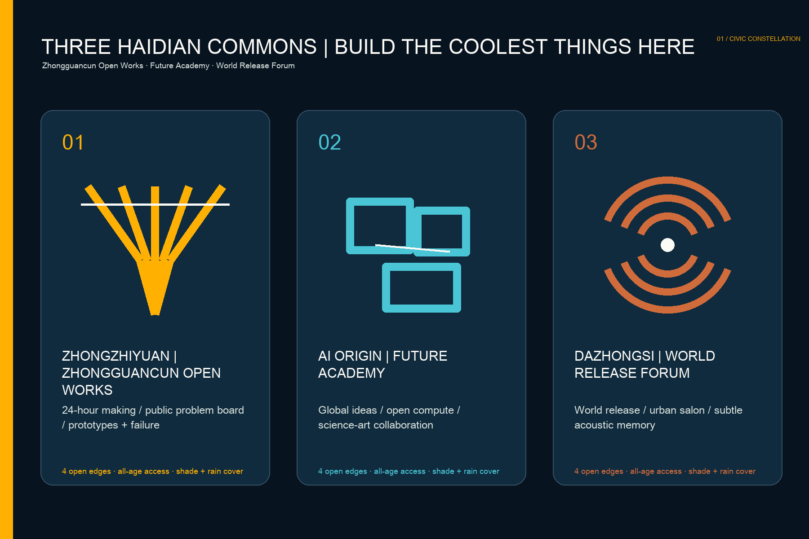
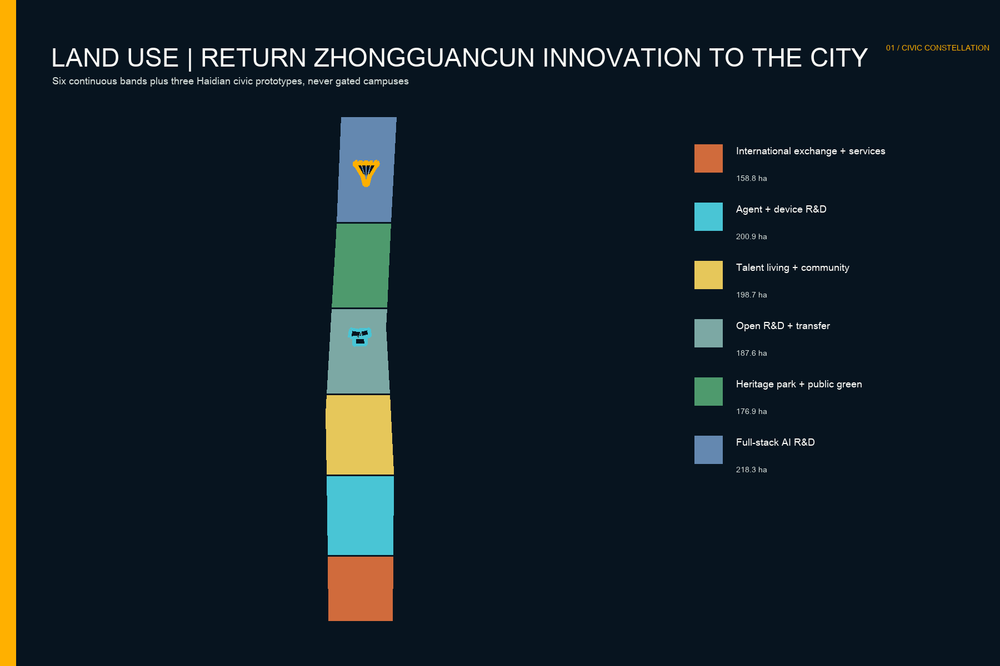
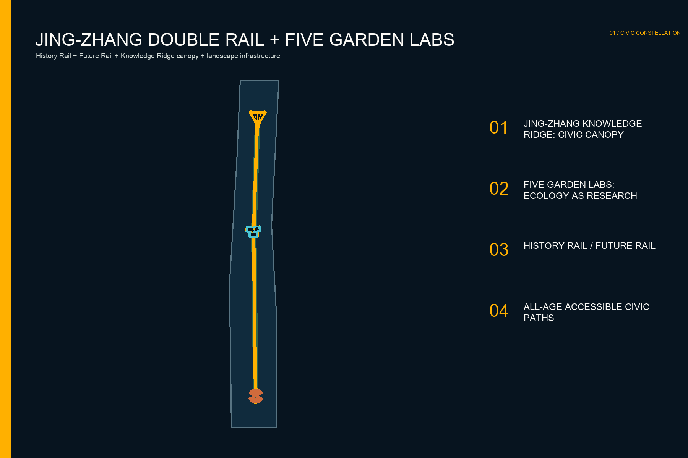
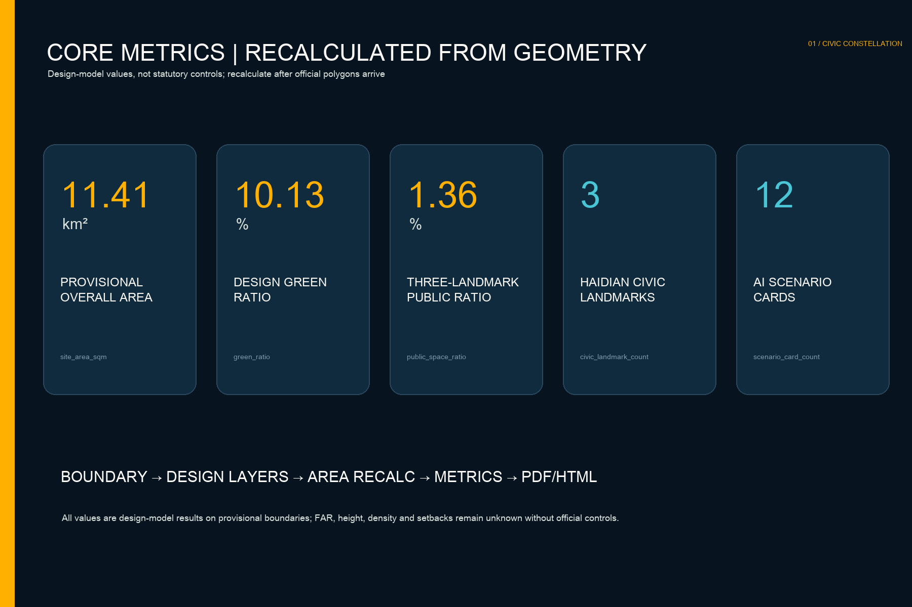

ZHONGGUANCUN OPEN WORKS
24-hour making, real problems, public prototypes and failures.

CENTENNIAL JING-ZHANG · ONE RIDGE · THREE COMMONS · FIVE GARDENS
Jing-Zhang is the engineering spine; garden civilisation the spatial DNA; academy culture the spirit; Zhongguancun innovation the operating system.
24-hour making, real problems, public prototypes and failures.
Ideas, open compute, institute-enterprise-citizen collaboration.
World release, urban salon and public accountability.

Six complete land-use bands meet the Knowledge Ridge, Three Commons and Five Gardens; canopy and pavilion footprints test scale only.



Official tasks 1.3/1.4/1.5 and agent.1-agent.6 are linked to chapters, layers, metrics, drawings and compliance evidence. Final status is determined by the repository four-gate check.
Overall and key-area polygons are provisional. Regulatory, ownership, road, rail, utility, fire, flood and heritage controls are missing. Spatial and operating proposals are conceptual references for professional development.